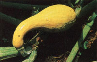

How many times have you tried unsuccessfully to locate a commercial source for some interesting plant you saw in a nearby public garden or arboretum? Perhaps you've not thought about trying to obtain that seed, cutting, or graft from the obvious source-the garden where you saw it! We have found that both large private growers and staff members at public gardens are usually eager to aid home gardeners in securing starts of hard-to-find plants.
If you are an amateur seeking aid, it's very important to do your "homework" on the appropriate propagation techniques for the plants you're interested in. And you must cooperate fully with the donors. This means no collecting without asking! You should not bother other gardeners for starts of common plants, of course; nor should you ask for patented or otherwise protected materials.
You'll find extraordinary educational benefits from interacting with experienced growers; most of these people are all but bubbling over with new ideas, tips, and useful suggestions. Just remember: After you've established your own private garden with the aid of local professionals, you have an obligation to help other gardeners get plant starts!
If the squash is bitter, don't eat it. On rare occasions, a zucchini or a yellow straightneck plant will produce quite bitter fruits. According to horticulturists at the Alabama Agricultural Experiment Station, bitter squash has high concentrations of cucurbitacin E, which is highly toxic to humans and which probably results from chance reversions to ancestral forms or from pollination by wild species. Because even a tiny amount of cucurbitacin E can be harmful, don't eat any squash that has a bitter taste; instead, save its seeds and send them to the Horticulture Department at the Alabama Agricultural Experiment Station (Auburn University, Auburn, AL 36849) to aid research on the causes of bitter squash.
"Dry light" for stored potatoes. If you've had trouble in the past with the sprouting of stored potatoes, take a tip from Canadian researchers: Store your tubers in a place that is not in total darkness and where the humidity is as low as possible. In experiments at the University of Regina, Saskatchewan, sprout growth of potatoes stored at room temperature was significantly reduced by keeping relative humidity at 40% and by providing moderate light (typical indoor lighting or a room with daylight is fine, but avoid direct sunlight).
Stake young trees loosely! Experiments at the University of California at Davis have shown that if young trees are allowed to bend somewhat with the wind, they generally develop more trunk strength than do trees staked rigidly. To help your trees "help themselves" to better self-support, use flexible stakes or ties.
Blueberries: Early fall pruning = delayed spring bloom. According to researchers at the University of Rhode Island, highbush blueberries pruned in midSeptember bloom up to a week later the following spring than do bushes pruned in either mid-November or mid-February. (Use caution with early pruning if you have extremely low winter temperatures-experiment first on just a few plants.) If you live where late spring frosts are a problem, the slight delay in blooming might make a big difference in crop yields!
Newspapers with colored inks are safe to use for mulching. Most gardeners have heard that newspapers with colored inks have high concentrations of lead and are unsafe to use as mulch. But an agronomist at the U.S. Department of Agriculture has found that colored-ink newspapers actually pose no significant threat of heavy-metal contamination. And the publisher of the Baltimore Sun has confirmed that the colored inks currently used are made from organic chemicals and contain negligible lead. So don't be afraid to use all the news for mulching!
Poly bags extend okra shelf life. Okra tends to lose its quality very rapidly after being picked, particularly when stored at room temperature. Researchers in India found that unpackaged okra had a shelf life of 2 days; they increased it to 15 days by keeping the harvested vegetable in nonperforated polyethylene bags (perforated poly bags gave a shelf life of 7 days).
Gassy beans? Try sprouting them! If you have a fine crop of beans (especially soybeans) but are wary of their tendency to produce intestinal gas and cramps, be advised that experiments in India with sprouting several kinds of legume seeds-including common beans, chick-peas, mung beans, and fava beans-have shown that the oligosaccharides responsible for the gassiness of legume seeds are eliminated within 72 hours after germination. So enjoy your beans this year-sprouted!
A newly revised and expanded edition of Ohio Cooperative Extension Bulletin 614, "Disease Control in the Landscape," discusses common diseases of ornamental trees, shrubs, and flowers, and includes color photographs of disease symptoms. It's available for $4.50 postpaid from Cooperative Extension Service Publications Office, 1945 Frebis Ave., Columbus, OH 43206 . . . . Anyone contemplating construction of a solar greenhouse should take a look at Solar Greenhouses and Sunspaces: Lessons Learned, which is based on the greenhouse projects funded by the Appropriate Technology Small Grants Program of the U.S. Department of Energy. You can order the book for $2.25 postpaid from GPO, Superintendent of Documents, Washington, DC 20402 . . . . Followers of the late Alan Chadwick (who worked tirelessly to introduce biodynamic/French intensive gardening methods to Americans) have formed a Chadwick Society to continue his teachings. A sample copy of the society's newsletter-a mix of practical horticultural information and literary articles-is $5.00 postpaid from Green Gulch Farm, ACS, Star Route 1, Sausalito, CA 94965 . . . . The Herb Information Handbook, compiled by Ruth Wrensch, lists 320 herb species hardy to-20°F, with species and common names, general descriptions, propagation methods, native habitats, light needs, uses, etc. At $5.00 postpaid (from Boerner Botanical Gardens, 5879 S. 92nd St., Hales Corners, WI 53130), it's a bargain.
EDITOR'S NOTE: Greg and Pat Williams raise most of their own food on a small farm and publish HortIdeas, a fine newsletter on gardening research and products (available for $10 a year from G. & P. Williams, Rt. 1, Box 302, Gravel Switch, KY 40328).
|
 Don't eat bitter squash! |
|
|